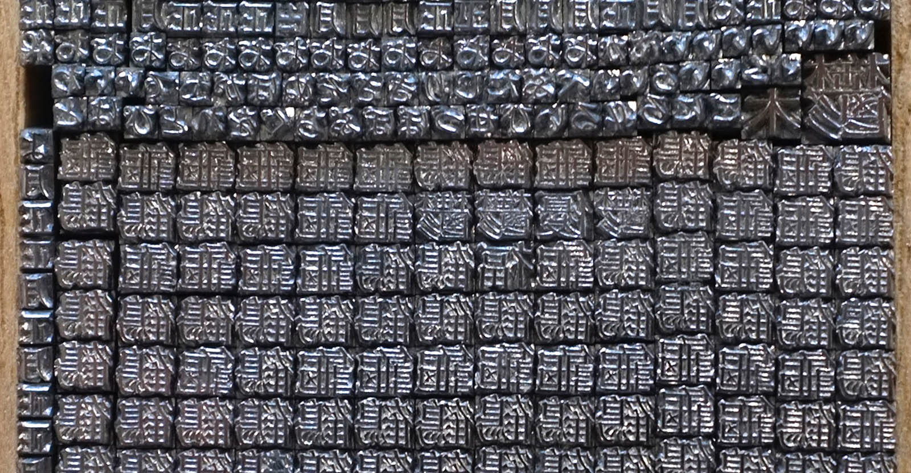

Wooden movable type was also first developed around 1040 AD by Bi Sheng (990-1051), as described by the Chinese scholar Shen Kuo (1031-1095), but was abandoned in favour of clay movable types due to the presence of wood grains and the unevenness of the wooden type after being soaked in ink.

A revolving typecase for wooden type in China, from Wang Zhen's book published in 1313. In 1298, Wang Zhen, a Yuan dynasty governmental official of Jingde County, Anhui Province, China, re-invented a method of making movable wooden types. He made more than 30,000 wooden movable types and printed 100 copies of Records of Jingde County, a book of more than 60,000 Chinese characters. Soon afterwards, he summarized his invention in his book “A method of making moveable wooden types for printing books.” This system was later enhanced by pressing wooden blocks into sand and casting metal types from the depression in copper, bronze, iron or tin. This new method overcame many of the shortcomings of woodblock printing. Rather than manually carving an individual block to print a single page, movable type printing allowed for the quick assembly of a page of text. Furthermore, these new, more compact type fonts could be reused and stored. The set of wafer-like metal stamp types could be assembled to form pages, inked, and page impressions taken from rubbings on cloth or paper.